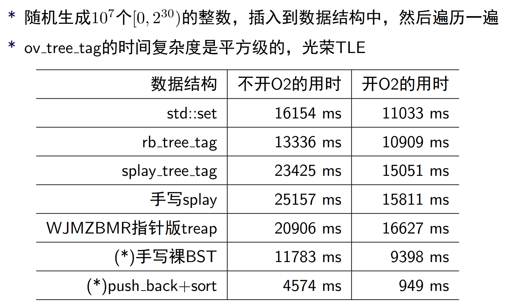
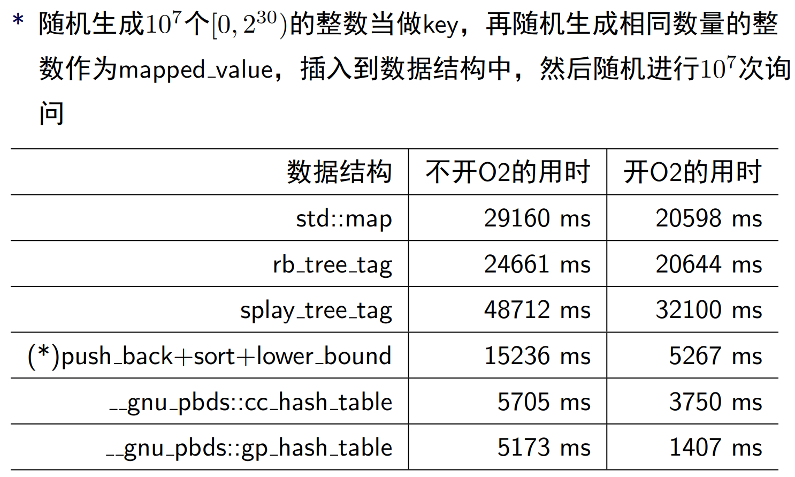
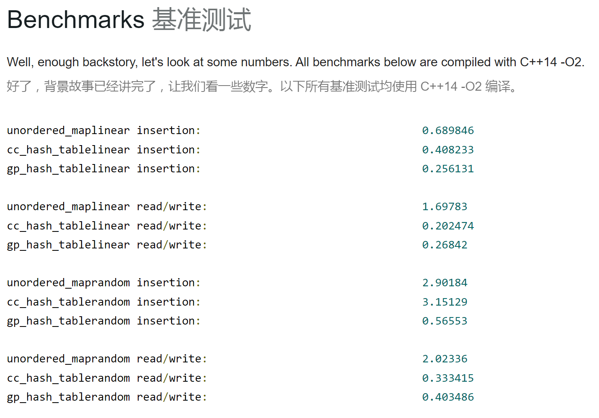

【于纪平】C++的pb_ds库在OI中的应用.pdf
CodeForces C++ STL: Order of magnitude faster hash tables with Policy Based Data Structures
CodeForces在 $\tt C^{20(64)}_{++}$ 版本下无法使用 bits；如果需要使用 priority_queue 则无法使用 using（会和 std 撞名字）。
#include <bits/extc.h>
using namespace __gnu_pbds;
一般使用 pairing_heap_tag，速度最快；binary_heap_tag 也大致能够接受。两者均拥有 std::priority_queue 的性质和函数，默认从大到小排序。
__gnu_pbds::priority_queue<int> p; // 标准写法
__gnu_pbds::priority_queue<int, greater<int>, __gnu_pbds::pairing_heap_tag> q; // 转换为小根堆
允许使用迭代器，输出的是在堆里的状态（注意，并不是默认的从小到大）。
__gnu_pbds::priority_queue<int> p;
p.push(12);
p.push(14);
p.push(14);
for (auto it : p) {
cout << it << " "; // 输出：14 12 14
}
结论：时间复杂度差于 std::priority_queue。
std::priority_queue 优化 djikstra 耗时124ms，使用 __gnu_pbds::priority_queue 则 耗时156ms；使用 $\tt C^{17(64)}{++}$ 版本耗时更长，为 171ms 。一般使用 rb_tree_tag，拥有 std::set 的性质和函数，速度较快。
tree<int, null_type, less<int>, rb_tree_tag> p; // 标准写法
p.insert(12);
p.insert(12);
p.insert(19);
p.insert(2);
for (auto it : p) {
cout << it << " "; // 输出：2 12 19
}
其中第二个参数如果不写内置关键字 null_type，则能够实现 std::map 的功能，该参数即等同于 std::map 的第二参数（但是效率巨低无比）。
tree<int, int, less<int>, rb_tree_tag> p;
p[12]++;
p[12]++;
p[19]++;
p[2]++;
for (auto [a, b] : p) {
cout << a << " " << b << endl;
}
/* 输出：
2 1
12 2
19 1
*/
如果第二关键字为 char 等其他类型，则需要手动书写一个哈希，否则输出会出现问题。
第三个参数可以使用 _equal 后缀以允许插入重复元素，进而替代 std::multiset。
tree<int, null_type, less<int>, rb_tree_tag> P;
tree<int, null_type, less_equal<int>, rb_tree_tag> p;
P.insert(12), p.insert(12);
P.insert(12), p.insert(12);
P.insert(19), p.insert(19);
P.insert(2), p.insert(2);
for (auto it : P) {
cout << it << " ";
}
cout << endl;
for (auto it : p) {
cout << it << " ";
}
/* 此时：
P = [2 12 19]
p = [2 12 12 19]
*/
在此操作之后，函数的性质发生了一些变化，find 函数不再能正确使用。
if (P.find(12) != P.end()) {
cout << "AC!\n";
}
if (p.find(12) == p.end()) {
cout << "WA!\n";
}
/* 输出：
AC!
WA!
*/
lower_bound 和 upper_bound 函数的实现将会被翻转：
lower_bound(x)：找到 $> x$ 的第一个迭代器；upper_bound(x)：找到 $\ge x$ 的第一个迭代器。cout << *P.upper_bound(12) << " " << *P.lower_bound(12) << endl;
cout << *p.upper_bound(12) << " " << *p.lower_bound(12) << endl;
/* 输出：
19 12
12 19
*/
其特殊之处在于最后一个可选参数类：内置关键字 tree_order_statistics_node_update 可以同步记录子树大小，使得你可以使用 find_by_order() 和 order_of_key() 函数。
tree<int, null_type, less<int>, rb_tree_tag, tree_order_statistics_node_update> p;
可以手写函数实现不同的功能，大模板如下：
template<class Node_CItr, class Node_Itr, class Cmp_Fn, class _Alloc>
struct myNodeUpdate {
virtual Node_CItr node_begin() const = 0;
virtual Node_CItr node_end() const = 0;
typedef int metadata_type;
};
可以重载 operator() 函数，将节点的信息更新为其两个子节点的信息之和。常用函数展示：
get_l_child：获取左儿子；get_r_child：获取右儿子；get_metadata：获取节点额外信息。下方展示一个计算子节点值之和的例子，可以类比于求解 std::map 前缀和、区间之和：
template<class Node_CItr, class Node_Itr, class Cmp_Fn, class _Alloc>
struct myNodeUpdate {
virtual Node_CItr node_begin() const = 0;
virtual Node_CItr node_end() const = 0;
typedef int metadata_type; // 声明节点上记录的额外信息的类型
void operator()(Node_Itr it, Node_CItr end_it) {
Node_Itr l = it.get_l_child(), r = it.get_r_child();
int left = 0, right = 0;
if (l != end_it) left = l.get_metadata();
if (r != end_it) right = r.get_metadata();
// (*it)->second 为当前节点 it 的 mapped_value
const_cast<metadata_type &>(it.get_metadata()) = left + right + (*it)->second;
}
int prefix_sum(int x) {
int ans = 0;
Node_CItr it = node_begin();
while (it != node_end()) {
Node_CItr l = it.get_l_child(), r = it.get_r_child();
if (Cmp_Fn()(x, (*it)->first)) {
it = l;
} else {
ans += (*it)->second;
if (l != node_end()) ans += l.get_metadata();
it = r;
}
}
return ans;
}
int interval_sum(int l, int r) {
return prefix_sum(r) - prefix_sum(l - 1);
}
};
测试结果如下：
tree<int, int, less<int>, rb_tree_tag, myNodeUpdate> p;
p[2] = 100;
p[3] = 1111;
p[9] = 1;
cout << p.prefix_sum(-1) << endl;
cout << p.prefix_sum(8) << endl;
cout << p.interval_sum(-500, 99) << endl;
cout << p.size() << endl;
/* 输出：
0
1211
1212
3
*/
个人尚未做过相关测试，引用论文中图表：

#include <ext/pb_ds/assoc_container.hpp>
#define mymap __gnu_pbds::gp_hash_table
一般使用 gp_hash_table，速度较快（使用查探法哈希）；cc_hash_table 速度稍慢（使用拉链法哈希），但均快于 map 和 unordered_map。
gp_hash_table<int, int> dic; // 标准写法
struct myhash {
static uint64_t splitmix64(uint64_t x) {
x += 0x9e3779b97f4a7c15;
x = (x ^ (x >> 30)) * 0xbf58476d1ce4e5b9;
x = (x ^ (x >> 27)) * 0x94d049bb133111eb;
return x ^ (x >> 31);
}
size_t operator()(uint64_t x) const {
static const uint64_t FIXED_RANDOM =
chrono::steady_clock::now().time_since_epoch().count();
return splitmix64(x + FIXED_RANDOM);
}
};
gp_hash_table<int, int, myhash> dic; // 支持自定义随机哈希种子
结论：时间复杂度优于 map 和 unordered_map 。
std::map 耗时920ms，使用自定义随机哈希种子 std::unordered_map 耗时842ms；使用 gp_hash_table 耗时764ms；使用自定义随机哈希种子 gp_hash_table 耗时780ms 。
